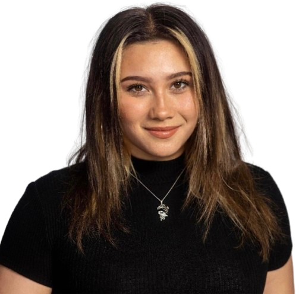

About Me
Hello! I'm Katie, a Computer Science (AI) master's student at the University of Southern California with a foundation in HCI from the University of Washington .
I’m moving from UX into software engineering and applied AI, and I care about building systems that are reliable, understandable, and accessible. My design background keeps me focused on real users; my CS work lets me turn those insights into working products.
When I'm not working, you can find me lifting or doing yoga in the gym, reading a good book, or exploring the outdoors.
Connect with me on LinkedIn or email me at katiexinran@gmail.com with job inquiries!